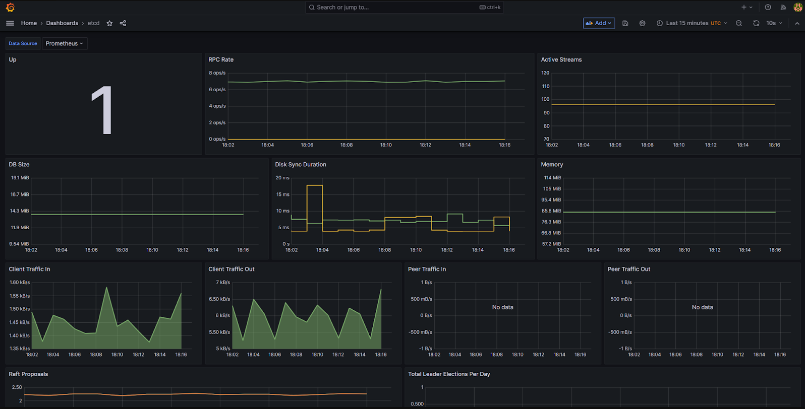
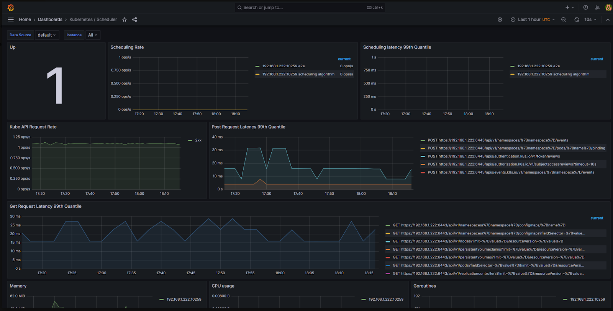
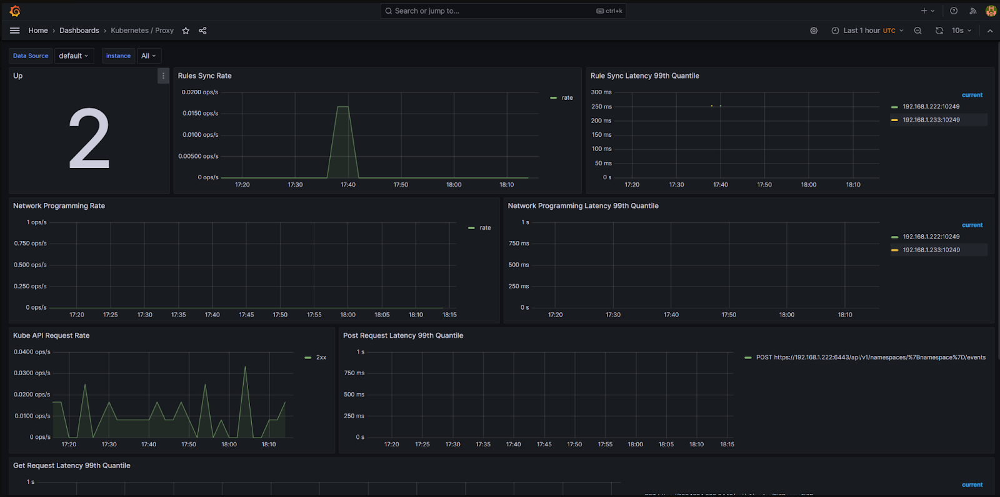
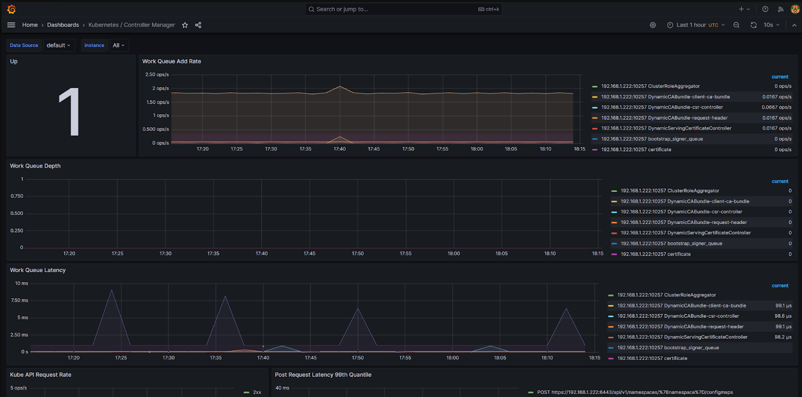
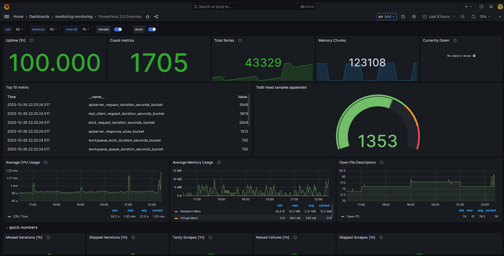
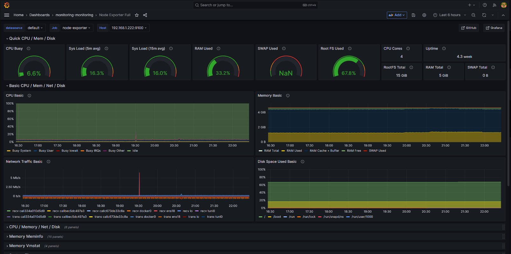
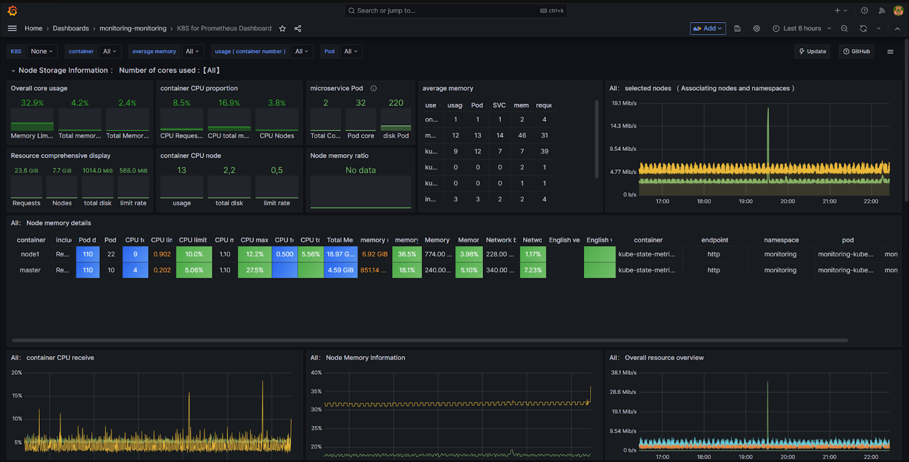
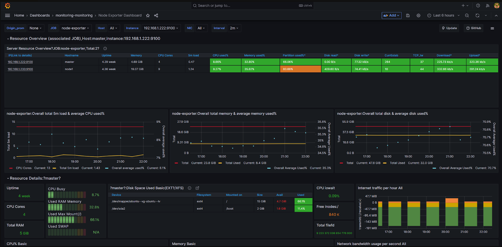

Prometheus is a monitoring tool designed to collect and analyze system operation data. Monitoring facilitates maintaining the stability and reliability of the infrastructure.
Beforehand, install the monitoring tools. Then configure the internal components of Kubernetes to transmit metrics to Prometheus.
The setup consists of four steps:
- Configure the kube-proxy component.
- Configure the kube-scheduler component.
- Configure the etcd component.
- Configure the kube-controller-manager component.
Step 1: Configure the kube-proxy component
- Make changes to the ConfigMap;
kubectl edit cm/kube-proxy -n kube-system
- Set the value
0.0.0.0:10249in hte linemetricsBindAddress;
kind: KubeProxyConfiguration
metricsBindAddress: "0.0.0.0:10249"
- Apply the changes.
kubectl -n kube-system rollout restart daemonset kube-proxy
Step 2: Configure the kube-scheduler component
- Make changes to the kube-scheduler.yaml manifest file;
nano /etc/kubernetes/manifests/kube-scheduler.yaml
- Set the value
0.0.0.0in the line--bind-address. The configuration will be applied automatically after saving the manifest.
- --bind-address=0.0.0.0
Step 3: Configure the etcd component
- Make changes to the etcd.yaml manifest file;
nano /etc/kubernetes/manifests/etcd.yaml
- Set the value
http://0.0.0.0:2381in the line--listen-metrics-urls. The configuration will be applied automatically after saving the manifest.
- --listen-metrics-urls=http://0.0.0.0:2381
Step 4: Configure the kube-controller-manager component
- Make changes to the kube-controller-manager.yaml manifest file:
nano /etc/kubernetes/manifests/kube-controller-manager.yaml
- Set the value
0.0.0.0in the line--bind-address. The configuration will be applied automatically after saving the manifest.
- --bind-address=0.0.0.0
Once the component configurations are set, their metrics will be available in Prometheus.
Data vizualisation
In the data visualization software Grafana, you can view charts with monitoring results.
Chart example 1

Chart example 2

Chart example 3

Chart example 4

Custom dashboards are also available. To activate them, enable dashboards.enabled in the values file for the installation of monitoring tools.
# Enable chart import
grafana-custom-dashboards:
dashboards:
enabled: true
Dashboard example 1

Dashboard example 2

Dashboard example 3

Dashboard example 4
